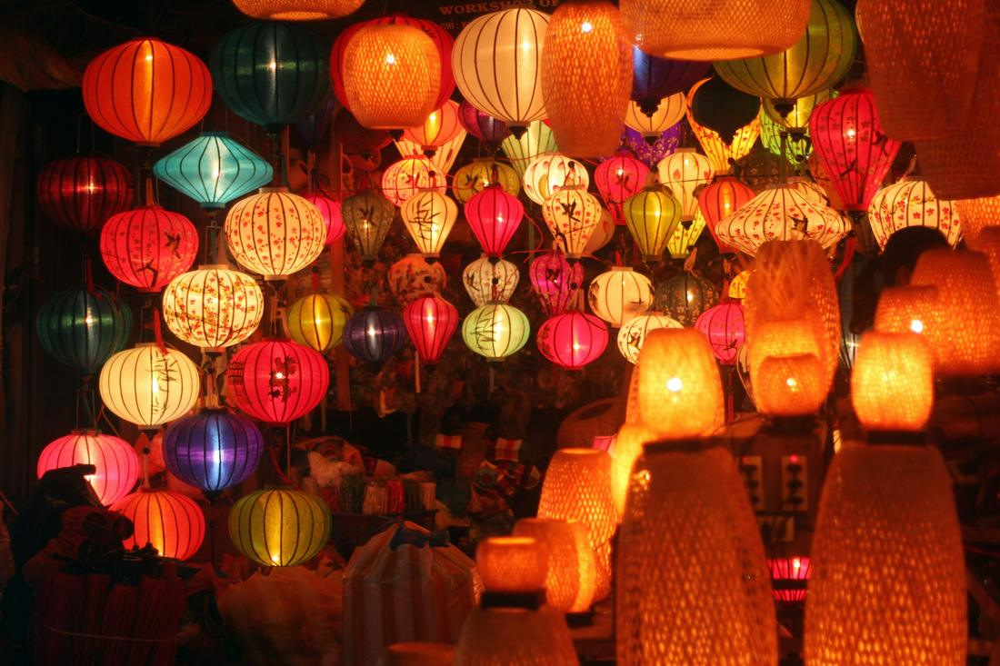
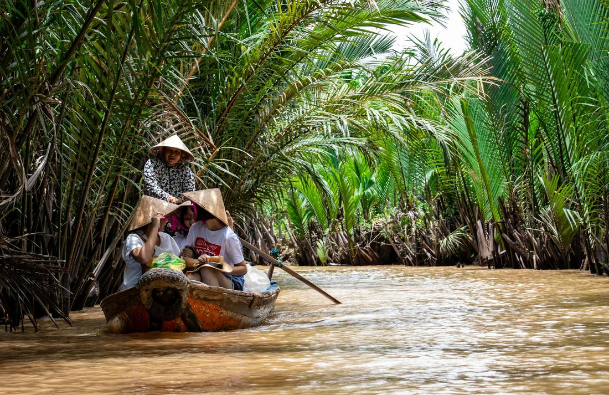

Limestone bays, lantern-lit streets, and flavors that'll ruin every noodle dish since.
Vietnam is one of those countries I have a hard time talking about without my hands moving, because there is simply too much to gesture at. In one trip you can stand in a limestone bay dotted with thousands of jungle-covered islands, wander a candlelit ancient town that's barely changed in 400 years, and float down a river delta so green and lush it feels like another planet entirely. Vietnam stretches over 1,000 miles from north to south, and every region has its own food, its own dialect, its own rhythm of daily life.
What I love most about sending clients to Vietnam is how effortlessly it delivers both comfort and wonder in the same day. Five-star hotels here cost a fraction of what you'd pay in Europe, a bowl of pho eaten on a plastic stool might be the best meal of your entire trip, and the people are some of the warmest I've encountered anywhere in the world. Whether you're a first-time international traveler or a seasoned one craving something different, Vietnam rewards curiosity at every single turn.
As your travel advisor, here's exactly how I'd build out a Vietnam itinerary — here are 3 excursions I love arranging for my clients.

Ha Long Bay is one of those places that photos genuinely undersell, and I say that as someone who has looked at a thousand of them before ever going myself. This package centers on an overnight (or multi-night) cruise through Ha Long Bay or its quieter, equally dramatic neighbor Lan Ha Bay, where nearly 2,000 limestone karsts rise straight out of jade-green water like something out of a dream. Your days are unhurried by design: kayaking or bamboo boating between the towering rock islands, ducking into the cathedral-like chambers of Sung Sot (Surprise) Cave, and climbing the steps of Ti Top Island for a viewpoint that stops every single guest in their tracks. Onboard, it's fresh seafood at sunset, a cooking demonstration on making spring rolls, and often an optional sunrise tai chi session on the top deck as the mist burns off the water. I love this package because it forces you to slow down in the best possible way — there's no rushing a bay this beautiful. It pairs beautifully with a few nights in Hanoi before or after, so you can experience both the chaos of the Old Quarter and the total stillness of the water.

Central Vietnam is where the country's history feels the most tangible, and this package strings together three of its most beloved stops. It starts in Hoi An, the UNESCO-listed ancient town where silk lanterns glow over every street at dusk, tailors can turn around a custom suit or dress in 24 hours, and a slow boat ride down the Thu Bon River lets you release a floating lantern of your own. From there, we head up into the Ba Na Hills, where a cable car climbs through the clouds to the Golden Bridge, the famous walkway cradled by two enormous stone hands with sweeping mountain views below. Finally, we visit Hue, Vietnam's former imperial capital, where you'll wander the walls of the Imperial Citadel and the ornate, dragon-guarded tomb of Emperor Khai Dinh along the Perfume River. This is the package I recommend most for travelers who want their trip to feel layered — a little bit market town, a little bit theme park wonder, a little bit royal history, all within about 48 hours of each other.

This package pairs the energy of Ho Chi Minh City with two of the most talked-about excursions in southern Vietnam. In the city itself, we'll take you through the Reunification Palace, the sobering War Remnants Museum, and the bustling stalls of Ben Thanh Market, giving you a real sense of both Vietnam's past and its fast-moving present. From there, it's out to the Cu Chi Tunnels, the extraordinary underground network used during the war, where you can crawl through a widened section yourself and see how an entire guerrilla base once operated beneath the jungle floor. The second half of the day (or the next morning) takes you into the Mekong Delta, where a small sampan boat glides you beneath a canopy of nipa palms along narrow brown-water canals, stopping at a local workshop to sample fresh tropical fruit and watch coconut candy being made by hand. If you have the extra day, an early departure to see the floating vendors of Cai Rang Market is one of my favorite sunrise experiences in the entire country.
Prefer to plan together? I'll build your custom package. Already know what you want? Book instantly through my travel portal.